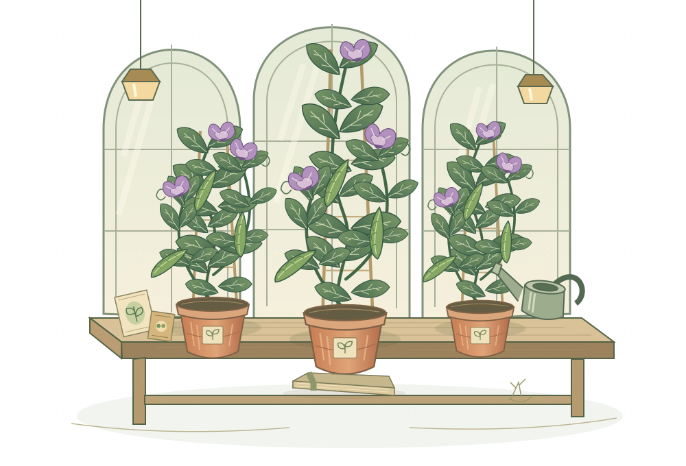

❧
豌豆邮局
THE PEA POST
孟德尔的温室来信
／
生物 · 必修二
设置与存档
玩法说明
♫
CHAPTER 01 · 显性与隐性
第一封紫色的信
☼
温室的春天
适合让好奇心发芽
第一季 · 紫色的来信
0 / 48 ★
孟德尔温室
GREENHOUSE NO. 01

✦
花粉正在旅行
去雄 → 人工授粉 → 套袋 → 观察子代
PISUM SATIVUM
小小豌豆，藏着生命的大秘密。
＋
放入亲本一
从下方种子库选择
×
杂交
＋
放入亲本二
也可以选同一基因型
THE SEED CABINET
选一颗种子，开始一个可能。
点击种子卡，放入当前亲本槽
A · 紫花（显性） a · 白花（隐性）
点击亲本槽可以换种子 ↖
选择亲本 ↓
×